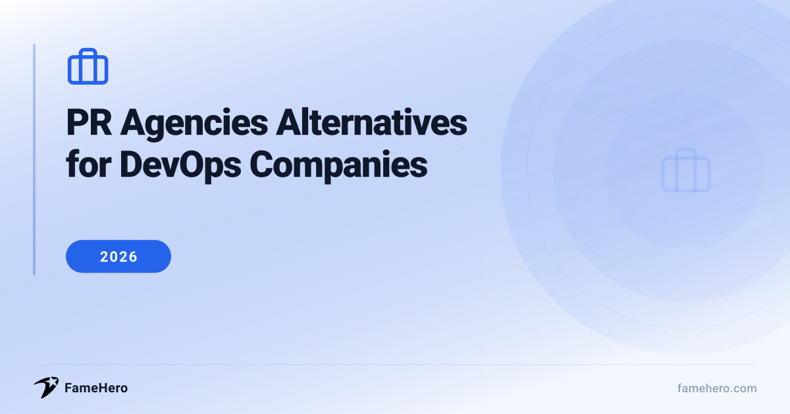

PR Agencies Alternatives for DevOps Companies in 2026 (Beyond Traditional Approaches)

PR Agencies Alternatives for DevOps Companies
DevOps companies often face frustrations with traditional PR agencies, including high costs, long contracts, and slow, unspecialized results. These agencies may not fully understand the nuances of the DevOps sector, leading to ineffective pitches and strategies that don't resonate with the target audience.
When looking for alternatives, DevOps companies should seek flexible pricing, adaptable agreements, and a specialization in the tech and DevOps space. A proven track record with similar clients and a focus on measurable, data-driven results that impact business outcomes are also key considerations.
Try guaranteed press coverage — from $49
No retainers, no commitments. Run a free brand scan to see your visibility score.
PR Agencies Alternatives for DevOps Companies (2026)
FameHero
famehero.comBudgetSmall to large businessesStarting at $49 per placementFameHero offers a unique approach by focusing on transparent, placement-based pricing rather than traditional retainers. They leverage AI-driven analysis to identify PR opportunities and place professionally written articles on trusted online publications. This method aims to enhance brand visibility, drive traffic, and build credibility.
StrengthsTransparent pricing, AI-driven opportunity identification, placement-based modelBest forCompanies seeking transparent, cost-effective media placement and enhanced online visibility.Not ideal forCompanies requiring deep, embedded strategic counsel, creative development, or policy review that goes beyond content placement. It doesn't offer the comprehensive, integrated services of a full-service agency that might include compliance checks or in-depth market analysis.PAN Communications
pancomm.comPremiumMid-market to enterpriseContact for pricingWith over two decades of experience, PAN Communications specializes in technology PR and marketing, with a strong focus on the cloud and DevOps sectors. They excel at translating complex technical topics into digestible narratives for key demographics, leveraging established media relationships to disseminate these stories.
StrengthsDeep expertise in cloud and DevOps, strong media relationships, narrative translation for technical topicsBest forMid-market to enterprise technology companies in the DevOps and cloud space needing sophisticated PR campaigns.Not ideal forStartups with very limited budgets or companies outside the technology sector. Their services are geared towards established players needing sophisticated, integrated marketing and PR campaigns.The Colab
thecolab.agencyPremiumStartups to established enterprisesContact for pricingThe Colab focuses on PR for cloud infrastructure and DevOps companies, emphasizing the importance of velocity and reliability in this sector. They translate deep technical work into stories that resonate with both engineers and business leaders, ensuring coverage speaks to technical and commercial stakeholders simultaneously.
StrengthsSpecialization in cloud infrastructure and DevOps PR, understanding of technical and business audiences, incident response PRBest forCloud infrastructure and DevOps companies needing PR that speaks to both technical and business stakeholders, including incident response.Not ideal forCompanies that do not operate in the cloud infrastructure or DevOps space, or those seeking a broad range of PR services beyond technical and B2B-focused communications.Swyft Marketing
swyft.agencyMid-marketEarly-stage SaaS startups to custom software providersContact for pricingSwyft Marketing provides PR strategies specifically for DevOps companies, aiming to elevate brands, attract prospects, and establish thought leadership. They emphasize understanding target audiences (journalists and buyers) and crafting compelling narratives that align with current tech trends like DevSecOps, CI/CD, and AI's impact on DevOps.
StrengthsTailored PR for DevOps, understanding of tech trends, focus on thought leadershipBest forDevOps companies, from early-stage SaaS startups to custom software providers, looking to establish thought leadership and attract prospects.Not ideal forCompanies that are not in the technology or DevOps sector, or those looking for a generalist PR firm that doesn't specialize in the technical nuances of DevOps.ZTABS
ztabs.comPremiumMarketing agencies and technology companiesContact for pricingZTABS offers "DevOps built specifically for marketing agencies," focusing on CI/CD pipeline setup, infrastructure as code, and container orchestration. While their primary focus is on marketing agencies, their expertise in DevOps implementation and compliance verification can be highly relevant for DevOps companies seeking to showcase their own operational excellence or seeking specialized marketing support.
StrengthsDevOps implementation expertise, CI/CD and IaC focus, compliance verificationBest forMarketing agencies and technology companies that require sophisticated DevOps implementation and compliance expertise to showcase operational excellence.Not ideal forCompanies seeking traditional PR services focused on media relations and brand building. ZTABS' core offering is DevOps implementation, not public relations in the conventional sense.God Digital Marketing
goddigitalmarketing.comMid-marketUS-based businesses of all sizesContact for pricingGod Digital Marketing provides comprehensive DevOps services across the USA, combining over 20 years of experience with cutting-edge strategies to drive revenue growth. They specialize in delivering scalable, secure solutions tailored for the US market, with a strong emphasis on CCPA compliance.
StrengthsNationwide US market focus, CCPA compliance, revenue growth through DevOpsBest forUS-based businesses of all sizes looking to leverage DevOps for digital transformation and revenue growth, with a focus on compliance.Not ideal forCompanies outside the United States or those seeking traditional PR services focused solely on media outreach and press releases. Their expertise lies in the strategic application of DevOps for business outcomes.Agency Partner Interactive
agencypartner.comMid-marketSmall to large businessesContact for pricingAgency Partner Interactive offers end-to-end DevOps services, including cloud infrastructure management, CI/CD pipeline implementation, and automated testing. They aim to streamline operations, enhance agility, and maximize technology investments for businesses. They also provide DevOps consultancy.
StrengthsEnd-to-end DevOps services, cloud management, CI/CD implementation, DevOps consultancyBest forBusinesses of all sizes looking to modernize processes, enhance agility, and optimize their technology stack through comprehensive DevOps services and consultancy.Not ideal forCompanies looking for pure PR services without a strong DevOps or technical consulting component. Their strength lies in the implementation and optimization of DevOps practices.LocalOps
localops.comBudgetStartups, early-stage companies, and growing businessesFree tier available; Pro plan starting at $39/user/monthLocalOps provides a DevOps-as-a-Service platform designed to automate DevOps workflows and custom pipelines for managing infrastructure environments. They offer flexible pricing plans, including a free tier for MVP setups, and focus on enabling rapid iteration and product building with zero cloud configuration.
StrengthsDevOps-as-a-Service platform, automation of workflows, flexible pricing including free tierBest forStartups, early-stage companies, and growing businesses seeking efficient and cost-effective DevOps solutions to automate workflows.Not ideal forCompanies seeking traditional PR agency services focused on external communication and media relations. LocalOps is a technology platform, not a PR firm.
PR agencies Alternatives for DevOps Companies (2026)
| Alternative | Website | Replaces | Price Range | Best For |
|---|---|---|---|---|
| FameHero | famehero.com | Traditional media placement and online visibility efforts. | Starting at $49 per placement | Companies seeking transparent, cost-effective media placement and enhanced online visibility. |
| PAN Communications | pancomm.com | Sophisticated PR campaigns for mid-market to enterprise technology companies. | Contact for pricing | Mid-market to enterprise technology companies in the DevOps and cloud space needing sophisticated PR campaigns. |
| The Colab | thecolab.agency | PR that speaks to both technical and business stakeholders, including incident response. | Contact for pricing | Cloud infrastructure and DevOps companies needing PR that speaks to both technical and business stakeholders, including incident response. |
| Swyft Marketing | swyft.agency | Thought leadership and prospect attraction for DevOps companies. | Contact for pricing | DevOps companies, from early-stage SaaS startups to custom software providers, looking to establish thought leadership and attract prospects. |
| ZTABS | ztabs.com | Showcasing operational excellence through sophisticated DevOps implementation and compliance expertise. | Contact for pricing | Marketing agencies and technology companies that require sophisticated DevOps implementation and compliance expertise to showcase operational excellence. |
| God Digital Marketing | goddigitalmarketing.com | Leveraging DevOps for digital transformation and revenue growth, with a focus on compliance. | Contact for pricing | US-based businesses of all sizes looking to leverage DevOps for digital transformation and revenue growth, with a focus on compliance. |
| Agency Partner Interactive | agencypartner.com | Modernizing processes, enhancing agility, and optimizing technology stacks through comprehensive DevOps services and consultancy. | Contact for pricing | Businesses of all sizes looking to modernize processes, enhance agility, and optimize their technology stack through comprehensive DevOps services and consultancy. |
| LocalOps | localops.com | Efficient and cost-effective DevOps solutions to automate workflows. | Free tier available; Pro plan starting at $39/user/month | Startups, early-stage companies, and growing businesses seeking efficient and cost-effective DevOps solutions to automate workflows. |
Transitioning Your PR Strategy: 5 Actionable Tips
- Evaluate Fit: Look for providers with proven DevOps/tech experience. Ask for case studies specific to your niche.
- Contract Scrutiny: Ensure clear deliverables, performance metrics, and exit clauses tailored to tech PR.
- Measure Early Wins: Track media mentions, website traffic spikes, and lead generation during the initial 90 days.
- Set Realistic Timelines: Expect 3-6 months for a new provider to fully integrate and show significant impact in the fast-paced DevOps sector.
- Avoid Pitfalls: Don't underestimate the learning curve for a new team. Prioritize communication and provide ample background on your company's technical offerings.
Navigating Common Pitfalls in PR Strategy for DevOps
- Hiring generalist PR agencies that may not grasp the nuances of the DevOps industry, resulting in generic pitches.
- Prioritizing the quantity of media placements over the quality and strategic narrative, failing to build category authority.
- Underestimating the impact of AI on discoverability, neglecting the need for context and claims that AI systems cite.
- Neglecting the need for agility and rapid response in PR strategies, which is crucial in the fast-paced tech world.
- Treating PR as a standalone function rather than an integrated strategy essential for AI discoverability and building trust.
- Overlooking modern, cost-efficient, and flexible alternatives like visibility platforms and expert-source networks.